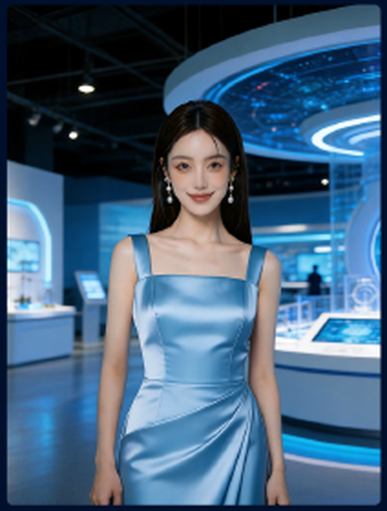

你好，我是灵犀。可以为你介绍实时数字人的形象、音色与互动能力。想从哪里开始？
REAL-TIME DIGITAL HUMAN
准备好开启你的实时沉浸式体验
选择一个数字人，或从自定义配置开始
形象已就绪
推荐数字人
灵犀
科技展厅讲解员 · 温和专业
DIGITAL HUMAN PROFILE
配置数字人的形象与表达
所有配置会在进入实时互动前进行预览灵犀实时互动中
延迟680 ms
你好，我是灵犀。想先了解数字人的哪一项能力？
演示中的回复为预设内容，不会上传或保存数据。